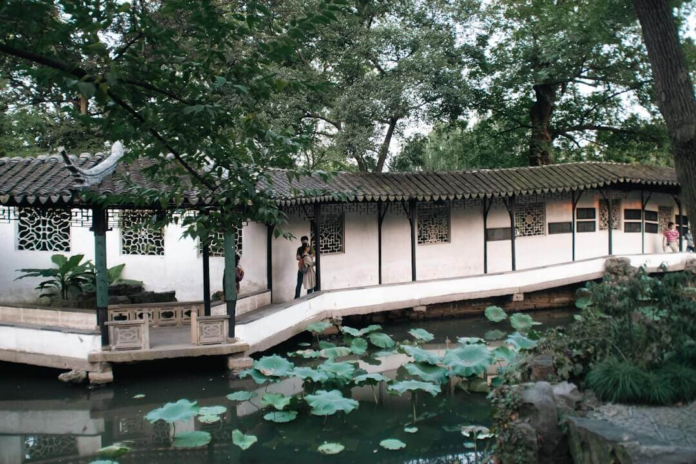
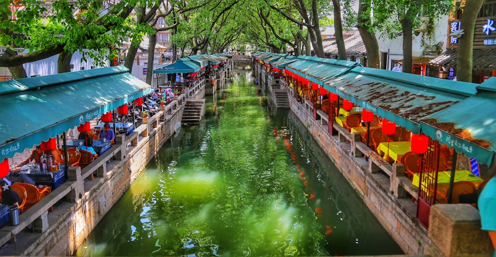

Suzhou is a major city in Jiangsu Province, China, located on the lower reaches of the Yangtze River and the shores of Lake Tai. With a population of over 12 million in its metropolitan area, Suzhou is one of the most prosperous cities in China, known for its rich history spanning over 2,500 years.

Culture, Cuisine & Scenery
Suzhou is renowned for its classical Chinese gardens, traditional water towns, and silk production. The city's cuisine is characterized by sweet and delicate flavors, featuring dishes like sweet and sour mandarin fish and biluochun tea. The picturesque canals, ancient bridges, and meticulously designed gardens make Suzhou one of China's most beautiful cities.

History & Heritage
As one of China's oldest cities, Suzhou has preserved much of its traditional charm. The city was founded in 514 BC and later became an important center for culture, trade, and craftsmanship. Many historic streets, pagodas, and temples still remain, giving visitors a glimpse into life during the Ming and Qing dynasties. Suzhou's classical gardens, such as the Humble Administrator's Garden and the Lingering Garden, are listed as UNESCO World Heritage Sites and reflect the city's long artistic tradition.
Economy & Modern Development
Although Suzhou is famous for its ancient beauty, it is also a major modern economic hub. The Suzhou Industrial Park and Suzhou High-Tech Zone attract global companies specializing in electronics, biotechnology, and manufacturing. This combination of historical culture and fast economic growth makes Suzhou a unique city where tradition and innovation coexist.